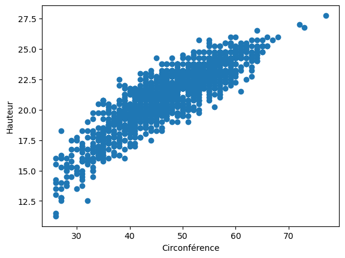
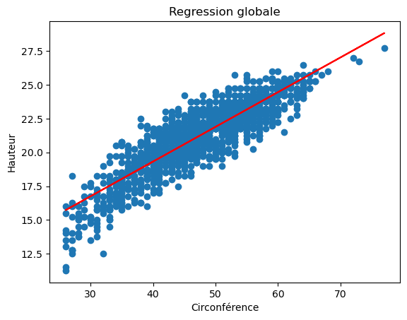

Linear regression (multiple)
[6]:
# load the data
import pandas as pd
df = pd.read_table("/Users/davidtbo/Documents/Data_Science/99_Data/eucalyptus.txt", sep=" ")
[7]:
df.head()
[7]:
| ht | circ | bloc | |
|---|---|---|---|
| 0 | 18.25 | 36 | A1 |
| 1 | 19.75 | 42 | A1 |
| 2 | 16.50 | 33 | A1 |
| 3 | 18.25 | 39 | A1 |
| 4 | 19.50 | 43 | A1 |
[8]:
df.columns
[8]:
Index(['ht', 'circ', 'bloc'], dtype='object')
[18]:
df.shape
[18]:
(1429, 3)
[9]:
df.describe(include='all')
[9]:
| ht | circ | bloc | |
|---|---|---|---|
| count | 1429.000000 | 1429.000000 | 1429 |
| unique | NaN | NaN | 3 |
| top | NaN | NaN | A2 |
| freq | NaN | NaN | 586 |
| mean | 21.212386 | 47.347796 | NaN |
| std | 2.490516 | 8.489743 | NaN |
| min | 11.250000 | 26.000000 | NaN |
| 25% | 19.750000 | 42.000000 | NaN |
| 50% | 21.750000 | 48.000000 | NaN |
| 75% | 23.000000 | 54.000000 | NaN |
| max | 27.750000 | 77.000000 | NaN |
[19]:
import matplotlib.pyplot as plt
[20]:
# Create a scatter plot (nuage de points)
plt.plot(df["circ"], df["ht"], "o")
# Define the labels
plt.xlabel("Circonférence")
plt.ylabel("Hauteur")
# Display the graph
plt.show()

[21]:
import numpy as np
from statsmodels.formula.api import ols
# Assuming your data is stored in a pandas DataFrame named 'euca'
model1 = ols('ht ~ circ', data=df).fit()
# Print the model summary
print(model1.summary())
OLS Regression Results
==============================================================================
Dep. Variable: ht R-squared: 0.768
Model: OLS Adj. R-squared: 0.768
Method: Least Squares F-statistic: 4732.
Date: Sun, 18 Feb 2024 Prob (F-statistic): 0.00
Time: 22:08:05 Log-Likelihood: -2286.2
No. Observations: 1429 AIC: 4576.
Df Residuals: 1427 BIC: 4587.
Df Model: 1
Covariance Type: nonrobust
==============================================================================
coef std err t P>|t| [0.025 0.975]
------------------------------------------------------------------------------
Intercept 9.0375 0.180 50.264 0.000 8.685 9.390
circ 0.2571 0.004 68.792 0.000 0.250 0.264
==============================================================================
Omnibus: 7.943 Durbin-Watson: 1.067
Prob(Omnibus): 0.019 Jarque-Bera (JB): 8.015
Skew: -0.156 Prob(JB): 0.0182
Kurtosis: 3.193 Cond. No. 273.
==============================================================================
Notes:
[1] Standard Errors assume that the covariance matrix of the errors is correctly specified.
[24]:
# Extract regression coefficients
intercept = model1.params[0]
slope = model1.params[1]
[28]:
# Data Visualization:
# Add regression line to the plot
plt.plot(df["circ"], df["ht"], "o")
plt.plot(df["circ"], intercept + slope * df["circ"], "-r")
# Customize the plot
plt.xlabel("Circonférence")
plt.ylabel("Hauteur")
plt.title("Regression globale")
# Show the plot
plt.show()

[30]:
# Model 2: ht ~ circ + I(sqrt(circ))
model2 = ols('ht ~ circ + I(np.sqrt(circ))', data=df).fit()
# Print model summaries
print("Model 2 summary:")
print(model2.summary())
Model 2 summary:
OLS Regression Results
==============================================================================
Dep. Variable: ht R-squared: 0.792
Model: OLS Adj. R-squared: 0.792
Method: Least Squares F-statistic: 2718.
Date: Sun, 18 Feb 2024 Prob (F-statistic): 0.00
Time: 22:17:44 Log-Likelihood: -2208.5
No. Observations: 1429 AIC: 4423.
Df Residuals: 1426 BIC: 4439.
Df Model: 2
Covariance Type: nonrobust
====================================================================================
coef std err t P>|t| [0.025 0.975]
------------------------------------------------------------------------------------
Intercept -24.3520 2.614 -9.314 0.000 -29.481 -19.223
circ -0.4829 0.058 -8.336 0.000 -0.597 -0.369
I(np.sqrt(circ)) 9.9869 0.780 12.798 0.000 8.456 11.518
==============================================================================
Omnibus: 3.015 Durbin-Watson: 0.947
Prob(Omnibus): 0.221 Jarque-Bera (JB): 2.897
Skew: -0.097 Prob(JB): 0.235
Kurtosis: 3.103 Cond. No. 4.41e+03
==============================================================================
Notes:
[1] Standard Errors assume that the covariance matrix of the errors is correctly specified.
[2] The condition number is large, 4.41e+03. This might indicate that there are
strong multicollinearity or other numerical problems.
[31]:
# Model 3: ht ~ I(sqrt(circ))
model3 = ols('ht ~ I(np.sqrt(circ))', data=df).fit()
# Print model summaries
print("Model 3 summary:")
print(model3.summary())
Model 3 summary:
OLS Regression Results
==============================================================================
Dep. Variable: ht R-squared: 0.782
Model: OLS Adj. R-squared: 0.782
Method: Least Squares F-statistic: 5121.
Date: Sun, 18 Feb 2024 Prob (F-statistic): 0.00
Time: 22:18:04 Log-Likelihood: -2242.5
No. Observations: 1429 AIC: 4489.
Df Residuals: 1427 BIC: 4500.
Df Model: 1
Covariance Type: nonrobust
====================================================================================
coef std err t P>|t| [0.025 0.975]
------------------------------------------------------------------------------------
Intercept -2.7304 0.336 -8.126 0.000 -3.389 -2.071
I(np.sqrt(circ)) 3.4942 0.049 71.560 0.000 3.398 3.590
==============================================================================
Omnibus: 3.687 Durbin-Watson: 1.016
Prob(Omnibus): 0.158 Jarque-Bera (JB): 3.579
Skew: -0.106 Prob(JB): 0.167
Kurtosis: 3.123 Cond. No. 76.7
==============================================================================
Notes:
[1] Standard Errors assume that the covariance matrix of the errors is correctly specified.
[33]:
import statsmodels.api as sm
anova_result = sm.stats.anova_lm(model1, type=2)
print(anova_result)
df sum_sq mean_sq F PR(>F)
circ 1.0 6805.331791 6805.331791 4732.364074 0.0
Residual 1427.0 2052.083972 1.438041 NaN NaN
[37]:
print(model1.summary())
OLS Regression Results
==============================================================================
Dep. Variable: ht R-squared: 0.768
Model: OLS Adj. R-squared: 0.768
Method: Least Squares F-statistic: 4732.
Date: Sun, 18 Feb 2024 Prob (F-statistic): 0.00
Time: 22:37:46 Log-Likelihood: -2286.2
No. Observations: 1429 AIC: 4576.
Df Residuals: 1427 BIC: 4587.
Df Model: 1
Covariance Type: nonrobust
==============================================================================
coef std err t P>|t| [0.025 0.975]
------------------------------------------------------------------------------
Intercept 9.0375 0.180 50.264 0.000 8.685 9.390
circ 0.2571 0.004 68.792 0.000 0.250 0.264
==============================================================================
Omnibus: 7.943 Durbin-Watson: 1.067
Prob(Omnibus): 0.019 Jarque-Bera (JB): 8.015
Skew: -0.156 Prob(JB): 0.0182
Kurtosis: 3.193 Cond. No. 273.
==============================================================================
Notes:
[1] Standard Errors assume that the covariance matrix of the errors is correctly specified.
[38]:
# Create new data frame with prediction range
xnew = pd.DataFrame({'circ': np.linspace(df['circ'].min(), df['circ'].max(), 1000)})
[47]:
xnew.head()
[47]:
| circ | |
|---|---|
| 0 | 26.000000 |
| 1 | 26.051051 |
| 2 | 26.102102 |
| 3 | 26.153153 |
| 4 | 26.204204 |
[39]:
# Generate predictions with confidence intervals
ICpred = pd.DataFrame(model1.get_prediction(xnew).summary_frame(alpha=0.05))
[40]:
ICpred.head()
[40]:
| mean | mean_se | mean_ci_lower | mean_ci_upper | obs_ci_lower | obs_ci_upper | |
|---|---|---|---|---|---|---|
| 0 | 15.723060 | 0.085870 | 15.554614 | 15.891505 | 13.364685 | 18.081434 |
| 1 | 15.736187 | 0.085693 | 15.568089 | 15.904285 | 13.377837 | 18.094537 |
| 2 | 15.749314 | 0.085516 | 15.581564 | 15.917064 | 13.390989 | 18.107639 |
| 3 | 15.762441 | 0.085339 | 15.595039 | 15.929844 | 13.404141 | 18.120742 |
| 4 | 15.775569 | 0.085161 | 15.608514 | 15.942623 | 13.417293 | 18.133844 |
[46]:
# Combine predictions and new data
res_pred = pd.concat([ICpred, xnew], axis=1)
print(res_pred.head().to_string())
mean mean_se mean_ci_lower mean_ci_upper obs_ci_lower obs_ci_upper circ
0 15.723060 0.085870 15.554614 15.891505 13.364685 18.081434 26.000000
1 15.736187 0.085693 15.568089 15.904285 13.377837 18.094537 26.051051
2 15.749314 0.085516 15.581564 15.917064 13.390989 18.107639 26.102102
3 15.762441 0.085339 15.595039 15.929844 13.404141 18.120742 26.153153
4 15.775569 0.085161 15.608514 15.942623 13.417293 18.133844 26.204204
Exercice
Charger le fichier “jouet1.txt” dans un dataframe nommé jouet1. Au vu du graphique de y contre x, une régression linéaire vous semble-t-elle indiquée ?
Faire la régression de y sur x et mettre le résultat dans un objet nommé reg. Afficher le résumé des résultats. Le résultat confirme-t-il la réponse à la question 1 ?
Afficher le graphique des résidus εˆ contre les valeurs ajustées yˆ . ii Que penser de ce graphique au vu de ce que l’on sait sur ces deux quantités ?
Afficher le graphique des résidus contre x. Identifier le problème.